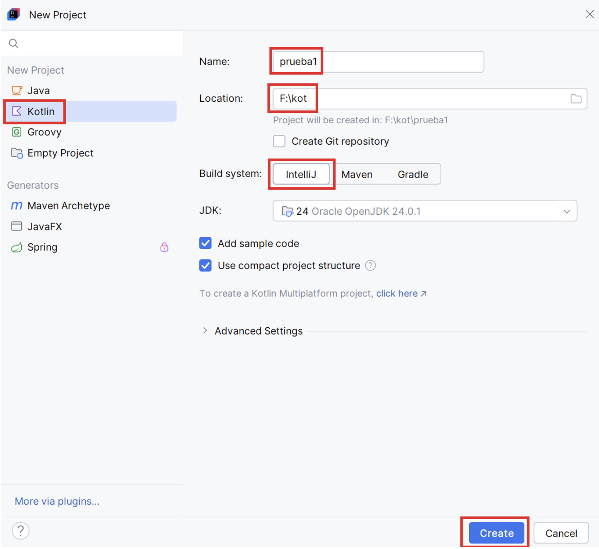

UD 1 Introducción a Kotlin
En este documento se realiza una introducción al lenguaje de programación Kotlin utilizando el IDE IntelliJ en su versión Community.
1. Introducción
En el módulo de Programación, de 1º de DAM, hemos trabajado con Java, un lenguaje orientado a objetos y ampliamente utilizado en el desarrollo de aplicaciones empresariales. Aprendimos conceptos como estructuras de control, clases, objetos y herencia.
Este curso, en el módulo de Acceso a Datos, vamos a continuar aplicando estos mismos conceptos utilizando Kotlin, un lenguaje moderno, conciso y seguro. Kotlin funciona sobre la máquina virtual de Java (JVM), fue desarrollado por JetBrains (los creadores de IntelliJ IDEA) y es 100% interoperable con Java.
Los principales usos de Kotlin son: aplicaciones Android, aplicaciones de escritorio (con Swing, JavaFX o Compose Desktop), backends web (con frameworks como Ktor o Spring) y desarrollo multiplataforma (Kotlin Multiplatform).
2. Instalación de IntelliJ Community
En este curso utilizaremos el IDE IntelliJ en su versión Community. Para instalarlo podemos descargarlo del enlace oficial https://www.jetbrains.com/idea/download/. Dependiendo de nuestro sistema operativo, escogeremos el instalador que mejor se ajuste a nuestras necesidades.
3. Proyectos
Antes de empezar hay que tener en cuenta cómo vamos a organizar nuestros proyectos. Cada uno de nosotros podemos tener una metodología de trabajo distinta (puede que unos prefieran crear un proyecto para cada ejercicio, otros un proyecto por unidad, etc). En los ejemplos de estos materiales, se ha creado una carpeta de trabajo llamada kot en la que se guardarán los distintos proyectos.
También podemos configurar el entorno de trabajo a nuestro gusto entrando al menú de ajustes. Para ello hacemos clic en el icono de la rueda dentada que hay en la esquina inferior izquierda de la pantalla principal del programa.
Una vez realizadas estas aclaraciones, ya podemos trabajar con proyectos. A continuación veremos algunos aspectos importantes.
3.1. Creación del proyecto
Para crear nuestro proyecto debemos realizar los siguientes pasos: - Abrir la aplicación y, en la ventana inicial, hacer clic en el icono New Project.
- Indicar los parámetros del proyecto:
- Marcar la opción Kotlin en la columna izquierda.
- Indicar el nombre del proyecto y su ubicación.
- Asegurarnos que aparece seleccionado el sistema IntelliJ.

- Por último, hacer clic en el botón Create.
Con estos pasos ya tendremos nuestro nuevo proyecto (prueba1) que aparecerá en una nueva ventana con un pequeño programa de ejemplo.
3.2. Ejecución de la aplicación
Para ejecutarla hay que hacer clic en el icono Play. El proyecto debe tener, al menos, un método main, Kotlin utiliza la palabra reservada fun para declararlo. El resultado de la ejecución aparecerá por consola (en la parte inferior de la pantalla).
3.3. Estructura de carpetas
Como vimos en Java, al crear un nuevo proyecto se crea una estructura de carpetas y los archivos fuentes deben estar en la carpeta src. En este caso, Kotlin funciona exactamente igual. Para crear una nueva clase o archivo hay que hacer clic con el botón derecho del ratón sobre carpeta src, luego hacer clic en New, luego clic en Kotlin File/Class y por último indicar el nombre.
3.4. Compartir proyectos
Por último vamos a recordar cómo compartir proyectos (para entregar en una tarea de clase, para hacer copia de seguridad, etc). Se realiza desde fuera de IntelliJ utilizando el explorador de archivos del sistema operativo. Para ello hay que localizar la carpeta correspondiente al proyecto y comprimirla.
4. Variables
Una variable es un espacio en memoria que guarda un dato (un número, un texto, etc). En Kotlin existen dos formas principales de declarar variables:
4.1. val – Inmutable (no se puede cambiar)
Es como una constante: una vez que le das un valor, no puedes cambiarlo.
4.2. var – Mutable (se puede cambiar)
Es una variable normal: puedes cambiar su valor más adelante.
4.3. Tipos de datos
En Kotlin no es necesario declarar el tipo de una variable (aunque puede hacerse). A continuación se detallan los tipos más comunes:
| Tipo | Descripción | Ejemplo |
|---|---|---|
| Byte | Entero pequeño (8 bits) | val a: Byte = 1 |
| Short | Entero corto (16 bits) | val b: Short = 100 |
| Int | Entero estándar (32 bits) | val c: Int = 1000 |
| Long | Entero largo (64 bits). Se debe añadir la L al final del número | val d: Long = 100000L |
| Float | Decimal de precisión simple (32 bits). Se debe añadir la f al final del número | val e: Float = 1.5f |
| Double | Decimal de precisión doble (64 bits). Es el tipo por defecto | val f: Double = 3.14 |
| Char | Caracter individual | val letra: Char = 'A' |
| String | Texto (También se puede acceder a los caracteres individualmente) | val saludo: String = "Hola Mundo"val letra = saludo[0] // 'H' |
| Boolean | Verdadero o falso | val esMayor = true |
A continuación se muestran los operadores aritméticos:
| Operador | Nombre | Ejemplo | Resultado |
|---|---|---|---|
| + | Suma | 5 + 3 |
8 |
| - | Resta | 10 - 4 |
6 |
| * | Multiplicación | 6 * 2 |
12 |
| / | División (entera o real) | 9 / 3 |
3 |
| % | Módulo (resto de una división) | 10 % 3 |
1 |
En Kotlin, una división entre enteros da como resultado un número entero: val resultado = 7 / 2 // Resultado: 3
Para obtener decimales, al menos uno debe ser tipo Double o Float: val resultado = 7.0 / 2 // Resultado: 3.5
En Kotlin, Por defecto, las variables no pueden ser nulas, el siguiente código daría un error de compilación ya que nombre no puede ser null:
Para permitir valores nulos, se usa el operador ?. Ahora el ejemplo ya es correcto:
Kotlin tiene unos operadores para evitar errores cuando se trabaja con variables que pueden ser null. A continuación se describen estos operadores:
| Operador | Nombre | Descripción |
|---|---|---|
?. |
Llamada segura | Ejecuta el método solo si la variable no es null |
?: |
Elvis operator | Devuelve un valor por defecto si la variable es null. |
!! |
Not null assertion | Fuerza el acceso a la variable. Si es null, lanza NullPointerException. |
Ejemplo 1 - Llamada segura (?.):
var nombre: String? = null
println (nombre?.length) // No lanza error, devuelve: null
nombre = "Pol"
println (nombre?.length) // Devuelve 3
Ejemplo 2 - Valor por defecto (?:):
var nombre: String? = null
var mostrar = nombre ?: "Desconocido"
println (mostrar) // Si nombre es null imprime: Desconocido
nombre = "Pol"
mostrar = nombre ?: "Desconocido"
println (mostrar) // Si nombre es "Pol" imprime: Pol
Ejemplo 3 - Acceso forzado (!!):
Ejemplo 4 - Uso con if:
if (nombre != null) {
println ("Hola, ${nombre.uppercase()}")
} else {
println ("Nombre no disponible")
}
5. Entrada y salida estándar
Cuando queremos mostrar información al usuario o pedirle información utilizamos la consola. Las funciones más comunes para comunicarnos con él son:
| Función | Descripción | Ejemplo | Salida |
|---|---|---|---|
print() |
Imprime texto en pantalla, sin salto de línea al final. | print("Hola ")print("mundo") |
Hola mundo |
println() |
Imprime texto en pantalla y añade un salto de línea al final. | println("Hola")println("mundo") |
Holamundo |
readLine() |
Lee una línea de texto que el usuario escribe por teclado. |
readLine() devuelve un valor de tipo String (que puede ser nulo). Hay que convertirlo si se espera otro tipo de dato (toInt(), toDouble(), etc.). Antes de la conversión hay que asegurarse de que no está vacío.
fun main() {
print ("Introduce tu edad: ")
val entrada = readLine()
if (entrada != null && entrada.isNotBlank()) {
val edad = entrada.toInt()
println ("Tendrás ${edad + 1} años el próximo año")
} else {
println ("Edad no válida")
}
}
6. Condicionales
Las condiciones en Kotlin se tratan de manera muy parecida a Java y para ello se utilizan los operadores relacionales.
| Operador | Significado | Ejemplo | Resultado |
|---|---|---|---|
== |
Igual a | 5 == 5 |
true |
!= |
Distinto de | 5 != 3 |
true |
> |
Mayor que | 10 > 7 |
true |
< |
Menor que | 3 < 8 |
true |
>= |
Mayor o igual que | 6 >= 6 |
true |
<= |
Menor o igual que | 4 <= 9 |
true |
Estos operadores pueden combinarse con los operadores lógicos siguientes:
| Operador | Nombre | Ejemplo | Resultado |
|---|---|---|---|
&& |
AND | (edad > 18 && tieneID) |
true si ambas son true |
|| |
OR | (edad > 18 || tieneID) |
true si alguna es true |
! |
NOT | !esActivo |
Invierte el valor: true → false |
Ejemplo 1 - condicional simple:
Ejemplo 2 - if-else:
Ejemplo 3 - if anidados:
val edad = 22
val tieneID = true
val esEmpleado = false
val tienePaseEspecial = true
if (edad >= 18 && tieneID) {
println ("Edad y documento verificados")
if (esEmpleado || tienePaseEspecial) {
println ("Acceso permitido a la zona restringida")
} else {
println ("Acceso denegado: no eres empleado o no tienes pase")
}
} else {
println ("Acceso denegado: no cumples con edad o documentación")
}
Ejemplo 4 - como expresión (devuelve un valor):
Ejemplo 5 - when (como switch):
val dia = 3
val nombreDia = when (dia) {
1 -> "Lunes"
2 -> "Martes"
3 -> "Miércoles"
else -> "Día inválido"
}
Ejemplo 6 - when con condiciones:
val nota = 85
val resultado = when {
nota >= 90 -> "Excelente"
nota >= 70 -> "Aprobado"
else -> "Reprobado"
}
7. Repeticiones
A continuación se ven las estructuras repetitivas while, do-while, for y repeat.
7.1. while
Repite mientras la condición sea verdadera. Se evalúa la condición antes de entrar al ciclo. Si la condición es falsa desde el principio, el bloque no se ejecuta.
7.2. do-while
Hace la acción al menos una vez, luego verifica la condición. Se ejecuta primero el bloque de código, y luego se evalúa la condición.
7.3. for
Recorre un rango, lista o secuencia. Se usa cuando sabemos cuántas veces queremos repetir algo.
7.4. repeat
Repite una acción N veces (sin necesidad de un rango ni una colección).
| Estructura | ¿Cuándo usarla? | ¿Evalúa primero? | ¿Se ejecuta al menos una vez? |
|---|---|---|---|
while |
Cuando no sabemos cuántas veces, pero depende de una condición. | Sí | No |
do-while |
Cuando queremos que se ejecute al menos una vez. | No | Sí |
for |
Cuando sabemos cuántas veces o queremos recorrer algo. | Sí | Sí |
repeat |
Cuando queremos repetir algo un número fijo de veces. | - | - |
8. Estructuras de datos
Las estructuras de datos son formas de organizar, almacenar y manipular información de manera eficiente. Las principales estructuras de datos en Kotlin son:
8.1. Array
Colección ordenada de tamaño fijo. Todos sus elementos son del mismo tipo. A cada elemento se accede mediante un índice. Se utiliza cuando se tiene un número fijo de elementos del mismo tipo.
- 1. Crear un array vacío con un tamaño fijo y luego llenarlo:
- 2. Asignar los valores directamente:
- 3. Utilizar
arrayOf:
No existe una clase concreta para manejar el tipo String y por tanto se utiliza el método genérico arrayOf visto en el ejemplo anterior:
- Acceder a los elementos de un array:
- Cambiar un valor del array:
- Tamaño del array:
- 2 formas de recorrer un array con un for:
8.2. List (lista)
Colección ordenada que permite elementos duplicados. Puede ser inmutable (List) o mutable (MutableList). Se utiliza cuando se quiere mantener un orden y permitir elementos repetidos.
val nombres = listOf("Pol", "Eli", "Ade") // No modificable
println(nombres) // [Pol, Eli, Ade]
val nombresMutable = mutableListOf("Pol", "Eli")
nombresMutable.add("Ade") // Añadir un elemento al final
nombresMutable.add(1, "Fer") // Añadir en una posición específica
nombresMutable[1] = "Sam" // Cambiar el valor en una posición específica
nombresMutable.remove("Sam") // Eliminar por valor
nombresMutable.removeAt(0) // Eliminar por índice
nombresMutable.clear() // Eliminar todos los elementos
8.3. Set (conjunto)
Colección sin duplicados, sin orden garantizado. Puede ser inmutable (Set) o mutable (MutableSet). Se utiliza cuando no se quieren duplicados y el orden no importa.
val set = setOf("Rojo", "Verde", "Rojo") // "Rojo" solo se guarda una vez
println(set) // Imprime: [Rojo, Verde]
val frutas = mutableSetOf("Manzana", "Banana", "Uva")
frutas.add("Naranja") // Agregar un elemento
println(frutas)
frutas.add("Banana") // Intentar agregar un duplicado
println(frutas)
frutas.remove("Uva") // Eliminar un elemento
println(frutas)
if ("Banana" in frutas) {
println("Sí hay Banana")
}
for (fruta in frutas) {
println("Fruta: $fruta")
}
8.4. Map (diccionario o mapa)
Colección de pares clave → valor. Cada clave es única; útil para representar relaciones. Puede ser inmutable (Map) o mutable (MutableMap). Se utiliza cuando se quiere asociar claves con valores.
val edades = mapOf("Pol" to 18, "Ade" to 20)
println(edades["Ade"]) // Imprime 20
val datos = mutableMapOf<String, Int>()
datos["Pol"] = 25
datos["Eli"] = 20
println("Pol:" + datos["Pol"])
println("Eli:" + datos["Eli"])
| Estructura | Ordenada | Claves únicas | Permite duplicados | Modificable |
|---|---|---|---|---|
Array |
Sí | No | Sí | (depende) |
List |
Sí | No | Sí | si es mutable |
Set |
No | Sí | No | si es mutable |
Map |
No | Sí (en claves) | en valores | si es mutable |
9. Funciones
Son bloques de código que realizan tareas específicas (métodos en Java) y sirven para organizar, reutilizar y evitar repetir el mismo código varias veces.
- Ejemplo de función sin parámetros ni retorno:
- Ejemplo de función con parámetros:
- Ejemplo de función que devuelve un valor (número entero):
- Ejemplo de función con forma simplificada:
- Ejemplo de función con parámetro con valor por defecto:
- Ejemplo de función con parámetros combinados (algunos con valores por defecto):
fun mostrarMensaje(mensaje: String, veces: Int = 1) {
repeat(veces) {
println(mensaje)
}
}
mostrarMensaje("¡Hola!")
mostrarMensaje("¡Hola!", 3)
- Ejemplo de llamada con argumentos nombrados:
fun mostrarMensaje(mensaje: String, veces: Int = 1) {
repeat(veces) {
println(mensaje)
}
}
mostrarMensaje("Hola a todos", 2)
mostrarMensaje(mensaje = "Hola a todos", veces = 2)
mostrarMensaje(veces = 2, mensaje = "Hola a todos")
- Ejemplo de función con un array de enteros como parámetro y retorno:
fun duplicarValores(numeros: Array<Int>): Array<Int> {
val resultado = Array(numeros.size) { i -> numeros[i] * 2 }
return resultado
}
val original = arrayOf(1, 2, 3)
val duplicados = duplicarValores(original)
println("Original: ${original.joinToString()}")
println("Duplicados: ${duplicados.joinToString()}")
- Ejemplo de función con un array de Strings como parámetro y retorno:
fun agregarSigno(nombres: Array<String>): Array<String> {
return Array(nombres.size) { i -> "${nombres[i]}!" }
}
val nombres = arrayOf("Pol", "Eli", "Ade")
val nombresConSigno = agregarSigno(nombres)
println("Original: ${nombres.joinToString()}")
println("Con signo: ${nombresConSigno.joinToString()}")
9.1. Funciones locales
Una función local es una función que se define dentro de otra función. Solo puede ser usada dentro de esa función de forma interna.
fun procesarTexto(texto: String) {
fun limpiar(cadena: String): String {
return cadena.trim().lowercase()
}
val resultado = limpiar(texto)
println("Texto procesado: $resultado")
}
procesarTexto(" Hola Mundo ")
9.2. Funciones con cantidad variable de argumentos
Un parámetro de una función puede recibir una cantidad variable de argumentos (0 o más), como si fuera un "array flexible" pero sin necesidad de pasarlos como un array. Para ello se utiliza la palabra clave vararg.
fun saludarVarios(vararg nombres: String) {
for (nombre in nombres) {
println("Hola, $nombre")
}
}
saludarVarios("Pol", "Eli")
- Ejemplo de combinar vararg con otros parámetros:
fun mostrarNumeros(titulo: String, vararg numeros: Int) {
println(titulo)
for (n in numeros) {
println(n)
}
}
mostrarNumeros("Lista de números:", 3, 5, 7)
- Ejemplo pasando valores desde un array:
fun imprimirNumeros(vararg numeros: Int) {
for (n in numeros) {
println(n)
}
}
val lista = intArrayOf(1, 2, 3, 4)
imprimirNumeros(*lista)
val extra = intArrayOf(4, 5)
imprimirNumeros(1, 2, 3, *extra, 6)
9.3. Funciones de orden superior
Una función de orden superior es una función que trabaja con funciones como si fueran datos.
- Ejemplo 1:
fun opera(a: Int, b: Int, op: (Int, Int) -> Int): Int {
return op(a, b)
}
val suma = opera(3, 4) { x, y -> x + y }
val resta = opera(10, 5) { x, y -> x - y }
println("Suma: $suma")
println("Resta: $resta")
- Ejemplo 2:
fun crearMultiplicador(factor: Int): (Int) -> Int {
return { numero -> numero * factor }
}
val porTres = crearMultiplicador(3)
println(porTres(5))
10. POO
La Programación Orientada a Objetos (POO) es una forma de escribir programas donde todo gira en torno a objetos. Un objeto es una combinación de datos (como características o propiedades) y métodos (acciones que puede hacer). En POO, usamos clases para crear estos objetos.
Ejemplo 1 - Constructor primario:
class Estudiante(val nombre: String, val edad: Int) {
// Método para imprimir los datos del estudiante
fun imprimirDatos() {
println("Nombre: $nombre, Edad: $edad")
}
// Método para verificar si es menor de edad
fun esMenorDeEdad(): Boolean {
return edad < 18
}
}
fun main() {
val estudiante1 = Estudiante("Pol", 16)
estudiante1.imprimirDatos()
println("¿Es menor de edad? ${estudiante1.esMenorDeEdad()}\n")
val estudiante2 = Estudiante("Eli", 20)
estudiante2.imprimirDatos()
println("¿Es menor de edad? ${estudiante2.esMenorDeEdad()}")
}
Ejemplo 2 - Propiedades dentro del cuerpo:
class Estudiante() {
var nombre: String = ""
var edad: Int = 0
fun imprimirDatos() {
println("Nombre: $nombre, Edad: $edad")
}
fun esMenorDeEdad(): Boolean {
return edad < 18
}
}
fun main() {
val estudiante1 = Estudiante()
estudiante1.nombre = "Pol"
estudiante1.edad = 16
estudiante1.imprimirDatos()
println("¿Es menor de edad? ${estudiante1.esMenorDeEdad()}\n")
val estudiante2 = Estudiante()
estudiante2.nombre = "Eli"
estudiante2.edad = 20
estudiante2.imprimirDatos()
println("¿Es menor de edad? ${estudiante2.esMenorDeEdad()}")
}
Ejemplo 3 - constructor secundario:
class Estudiante {
var nombre: String = ""
var edad: Int = 0
// Constructor secundario
constructor(nombre: String, edad: Int) {
this.nombre = nombre
this.edad = edad
}
fun imprimirDatos() {
println("Nombre: $nombre, Edad: $edad")
}
fun esMenorDeEdad(): Boolean {
return edad < 18
}
}
10.1. Constructor primario + secundario
class Estudiante(val nom: String, val edad: Int, val direccion: String) {
// Constructor secundario que asigna una dirección vacía
constructor(nom: String, edad: Int) : this(nom, edad, "Sin dirección")
fun imprimirDatos() {
println("Nombre: $nom, Edad: $edad, Dirección: $direccion")
}
fun esMenorDeEdad(): Boolean {
return edad < 18
}
}
fun main() {
val estudiante1 = Estudiante("Pol", 16, "Calle Mayor")
estudiante1.imprimirDatos()
println("¿Es menor de edad? ${estudiante1.esMenorDeEdad()}\n")
val estudiante2 = Estudiante("Eli", 20)
estudiante2.imprimirDatos()
println("¿Es menor de edad? ${estudiante2.esMenorDeEdad()}")
}
10.2. getters y setters
get y set son mecanismos para acceder y modificar propiedades, y forman parte del encapsulamiento y control de acceso. En Kotlin todas las propiedades (var) tienen automáticamente un getter y un setter.
- Ejemplo 1 - Getters y Setters automáticos:
class Estudiante {
var nombre: String = "Sin nombre"
}
fun main() {
val estudiante = Estudiante()
estudiante.nombre = "Pol" // setter automático
println(estudiante.nombre) // getter automático. Salida: Pol
}
- Ejemplo 2 - Personalizar el getter y el setter:
class Producto {
var nombre: String = "Sin nombre"
var precio: Double = 0.0
get() {
println("Obteniendo precio...")
return field
}
set(value) {
println("Asignando precio: $value")
field = if (value >= 0) value else 0.0
}
}
fun main() {
val producto = Producto()
producto.precio = 120.0
println("Precio actual: ${producto.precio}")
producto.precio = -50.0
println("Precio actual: ${producto.precio}")
producto.nombre = "Teclado inalámbrico"
println("Nombre del producto: ${producto.nombre}")
}
- Ejemplo 3 - Propiedad de solo lectura (
valcongetpersonalizado):
class Circulo(val radio: Double) {
val area: Double
get() = Math.PI * radio * radio
}
fun main() {
val c = Circulo(5.0)
println("Área del círculo: ${c.area}")
}
- Ejemplo 4 - Setter privado:
class Usuario(val nombre: String) {
var edad: Int = 0
private set // Solo se puede modificar dentro de la clase
fun cumpleaños() {
edad++
}
}
fun main() {
val usuario = Usuario("Pol")
usuario.cumpleaños()
println("Edad: ${usuario.edad}")
// usuario.edad = 30 // Esto daría un error de compilación
}
10.3. Relación entre clases
Normalmente en una aplicación necesitaremos programar varias clases que se relacionarán unas con otras.
class Curso(val nombre: String, val duracionSemanas: Int) {
fun infoCurso(): String {
return "Curso: $nombre, Duración: $duracionSemanas semanas"
}
}
class Estudiante(
val nombre: String,
val edad: Int,
val direccion: String,
val curso: Curso
) {
constructor() : this("Sin nombre", 0, "Sin direc", Curso("Ninguno", 0))
fun imprimirDatos() {
println("Nombre: $nombre")
println("Edad: $edad")
println("Dirección: $direccion")
imprimirEstadoEdad()
println(curso.infoCurso())
}
fun esMenorDeEdad(): Boolean {
return edad < 18
}
fun imprimirEstadoEdad() {
val estado = if (esMenorDeEdad()) "es menor" else "mayor de edad"
println("Estado: Es $estado.")
}
}
fun main() {
val cursoKotlin = Curso("Kotlin Básico", 6)
val cursoJava = Curso("Java Intermedio", 8)
val estudiante1 = Estudiante("Pol", 16, "C. Mayor", cursoKotlin)
val estudiante2 = Estudiante("Eli", 20, "Enmedio 89", cursoJava)
estudiante1.imprimirDatos()
println()
estudiante2.imprimirDatos()
}
10.4. Acceso a métodos y propiedades
En Kotlin todo es público por defecto. Para indicar quién puede ver o usar una clase, propiedad o método desde fuera de la clase se utilizan los modificadores de acceso.
class CuentaBancaria(val titular: String) {
private var saldo: Double = 0.0
fun depositar(cantidad: Double) {
saldo += cantidad
}
fun mostrarSaldo() {
println("Saldo actual: $saldo")
}
}
fun main() {
val cuenta = CuentaBancaria("María")
cuenta.depositar(100.0)
cuenta.mostrarSaldo()
// cuenta.saldo = 1000.0 // ERROR: saldo es private
}
10.5. Herencia
La Herencia es un mecanismo por el cual una clase (subclase) puede heredar propiedades y métodos de otra clase (superclase).
Por seguridad, en Kotlin:
- Las clases no se pueden heredar a menos que se marquen con open.
- Los métodos también deben ser open para poder sobrescribirse.
open class Animal(val nombre: String) {
open fun hacerSonido() {
println("$nombre hace un sonido genérico")
}
}
class Perro(nombre: String) : Animal(nombre) {
override fun hacerSonido() {
super.hacerSonido()
println("$nombre dice: ¡Guau!")
}
}
class Gato(nombre: String) : Animal(nombre) {
override fun hacerSonido() {
super.hacerSonido()
println("$nombre dice: ¡Miau!")
}
}
fun main() {
val animal = Animal("Criatura")
val perro = Perro("Firulais")
val gato = Gato("Misu")
animal.hacerSonido()
println("----")
perro.hacerSonido()
println("----")
gato.hacerSonido()
}
10.6. Arrays y ArrayLists de objetos
- Ejemplo 1 - Array de objetos:
fun main() {
val animales: Array<Animal> = arrayOf(
Perro("Rocky"),
Gato("Luna"),
Perro("Max"),
Animal("Criatura misteriosa"),
Gato("Nina")
)
for (animal in animales) {
animal.hacerSonido()
}
}
- Ejemplo 2 - ArrayList de objetos:
fun main() {
val animales = mutableListOf<Animal>(
Perro("Rocky"),
Gato("Luna"),
Perro("Max"),
Animal("Criatura misteriosa"),
Gato("Nina")
)
println("Todos los animales hacen sonido:")
for (animal in animales) {
animal.hacerSonido()
}
println("\nSolo los perros:")
val soloPerros = animales.filterIsInstance<Perro>()
for (perro in soloPerros) {
perro.hacerSonido()
}
}
10.7. Funciones de extensión
Las funciones de extensión permiten añadir nuevas funciones a clases existentes sin tener que modificarlas ni heredar de ellas.
- Ejemplo 1 - Función de extensión para la clase String:
fun String.saludar(): String {
return "Hola, $this"
}
fun main() {
val nombre = "Pol"
println(nombre.saludar())
}
- Ejemplo 2 - Función de extensión para una clase personalizada:
open class Animal(val nombre: String) {
open fun hacerSonido() {
println("$nombre hace un sonido genérico")
}
}
fun Animal.nombreEnMayusculas(): String {
return nombre.uppercase()
}
fun main() {
val gato = Animal("Misu")
println(gato.nombreEnMayusculas())
}
- Ejemplo 3 - Función de extensión con lógica adicional:
fun Int.esPar(): Boolean {
return this % 2 == 0
}
fun main() {
val numero = 4
if (numero.esPar()) {
println("$numero es par")
} else {
println("$numero es impar")
}
}
10.8. data class
Una data class es una clase pensada para almacenar datos sin necesidad de implementar funcionalidades.
data class Libro(val titulo: String, val autor: String, val any: Int)
fun main() {
val libro1 = Libro("1984", "George Orwell", 1949)
val libro2 = Libro("Cien años de soledad", "Gabriel García Márquez", 1967)
val libro3 = Libro("Fahrenheit 451", "Ray Bradbury", 1953)
val libro4 = Libro("Orgullo y prejuicio", "Jane Austen", 1813)
val biblioteca = listOf(libro1, libro2, libro3, libro4)
println("Biblioteca completa:")
for (libro in biblioteca) {
println(libro.titulo + " - " + libro.autor + " (" + libro.any + ")")
}
println("\nLibros ordenados por año (de menor a mayor):")
val ordenados = biblioteca.sortedBy { it.any }
for (libro in ordenados) {
println(libro.titulo + " -> " + libro.any)
}
println("\nCopiar un libro y cambiar su año:")
val libroModificado = libro1.copy(any = 2025)
println("Original: " + libro1.toString())
println("Modificado: " + libroModificado.toString())
println("\n¿Son iguales los objetos? " + (libro1 == libroModificado))
}
10.9. Sobrecarga de operadores
La sobrecarga de operadores permite definir o personalizar el comportamiento de los operadores (+, -, *, ==, etc.) al aplicarse sobre instancias de nuestras propias clases.
- Ejemplo 1 - Clase Punto con operador + sobrecargado:
data class Punto(val x: Int, val y: Int) {
operator fun plus(otro: Punto): Punto {
return Punto(this.x + otro.x, this.y + otro.y)
}
}
fun main() {
val p1 = Punto(2, 3)
val p2 = Punto(4, 1)
val resultado = p1 + p2
println(resultado)
}
- Ejemplo 2 - Comparar dos animales por nombre:
class Animal(val nombre: String) {
override operator fun equals(other: Any?): Boolean {
return other is Animal && this.nombre == other.nombre
}
}
fun main() {
val a1 = Animal("Luna")
val a2 = Animal("Luna")
val a3 = Animal("Max")
println(a1 == a2)
println(a1 == a3)
}
11. Funciones lambda
Las funciones lambda son funciones definidas sin un nombre, utilizadas para operaciones simples y rápidas, mejorando la legibilidad del código y el rendimiento.
- Ejemplo básico:
- Ejemplo sin parámetros:
- Ejemplo con múltiples parámetros:
- Ejemplo 1 - forEach con IntArray:
- Ejemplo 2 - map para transformar:
- Ejemplo 3 - map + toIntArray():
- Ejemplo 4 - filter para filtrar elementos:
12. Excepciones
Una excepción es un error que ocurre en tiempo de ejecución y que interrumpe el flujo normal del programa.
fun main() {
try {
val resultado = 10 / 0
println("Resultado: $resultado")
} catch (e1: ArithmeticException) {
println("Error: División entre cero")
} catch (e2: Exception) {
println("Otro error")
} finally {
println("Fin del bloque try-catch")
}
}
13. Package e import
Un package es una forma de agrupar clases, funciones, objetos y otros archivos relacionados bajo un mismo nombre. La palabra clave import se usa para acceder a clases, funciones u objetos definidos en otros paquetes.
- Ejemplo 1 - package e import:
- Ejemplo 2 - import ... as ... (alias):
- Ejemplo 3 - Importar todo un paquete (
*):
- Ejemplo completo:
package util
fun saludar(nombre: String): String {
return "¡Hola, $nombre!"
}
fun despedir(nombre: String): String {
return "Adiós, $nombre."
}
package util
fun sumar(a: Int, b: Int): Int = a + b
fun multiplicar(a: Int, b: Int): Int = a * b
package app
import util.saludar
import util.despedir
import util.sumar
import util.multiplicar
fun main() {
val nombre = "Kotlin"
println(saludar(nombre))
println("Suma: ${sumar(3, 5)}")
println("Multiplicación: ${multiplicar(4, 6)}")
println(despedir(nombre))
}